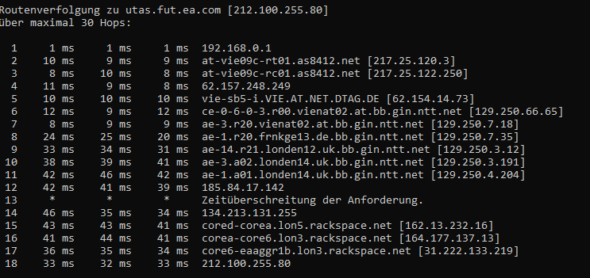
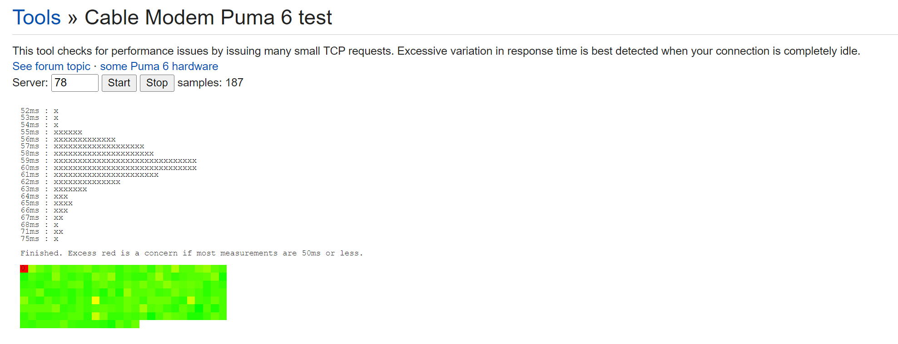

Hallo,
ich nutze Gigakraft Gaming 300 (verbunden über Kabel) und spiele Fifa 23 auf dem PC. (Controller auch Kabelgebunden)
Obwohl laut " EA Connection Report " die Qualität der Verbindung fast perfekt sein sollte ( siehe Anhang ), unterscheidet sich mein Gameplay deutlich von anderen (z.B. Streamern, Youtubern, aber auch Freunden in anderen Bundesländern oder Deutschland). Ich komme aus Wien und Im Spiel habe ich meistens einen Ping der zwischen 17 und 30 variiert.
Folgende Problematik äußert sich in mindestens 90% der Spiele :
- deutlich langsameres Gameplay
- deutlich verzögerte Reaktion der Spieler (Input Delay)
- Spieler fühlen sich sehr träge und unbeweglich an
- Das Spiel fühlt sich extrem "glitchy" an, Spieler rennen ineinander, können teilweise nicht "abbremsen", laufen am Ball vorbei, etc.
In wirklich sehr seltenen Fällen haben ich gutes Gameplay (so, wie das Spiel eigentlich immer sein müsste), und es fühlt sich tatsächlich wie ein anderes Spiel an.
Ich habe Freunde in anderen Bundesländern und Deutschland (was ja nicht allzuweit weg ist), und bei denen ist es genau umgekehrt. 90% gutes Gameplay, 10% schlechtes.
Deshalb habe ich mir gedacht, könnte es doch am ISP Routing von Magenta liegen?
In Wien gibt es ja anscheinend keinen EA Server, und die nächsten im Umkreis sind denke ich in Mailand, Frankfurt und Warschau. Vielleicht werde ich auch einfach immer nach London oder noch weiter weg "geroutet"? Im Spiel gibt es leider keine Option einen Server auszuwählen.
Ich bin ich mit meinem Latein wirklich am Ende, ich habe schon so vieles probiert und will einfach nur das einzige Spiel das ich Spiele so spielen wie es tatsächlich gespielt werden sollte.
Bitte um Hilfe.

Bearbeitet von losxblancosHallo,
Ich habe das selbe Problem bei FIFA 23, aber auch bei anderen Spielen. Bei mir handelt es sich aber um eine PS4. Die Downloadgeschwindigkeit befindet sich zwischen 180 und 240 Mbit/s und Upload zwischen mageren 3-6 Mbit/s was viel zu wenig ist.
Habe versucht den DNS Server zu ändern und der Internetzugang einzurichten, doch der Router blockiert womöglich diese Einstellung. Ich kann nach der Änderung des DNS Servers meine PS nicht mehr mit dem Internet verbinden.
Ich hoffe, dass sich jemand hier auskennt.
LG Josip
Hallo @losxblancos ,
hast du dich schon mal bei EA schlau gemacht, ob du irgendwelche Einstellungen ändern kannst?
in deinem Fall, ist es am besten, wenn du dich an unsere Techniker*innen (0676 200 7777) wendest und einmal deine Verbindung prüfen lässt. Ich vermute eine mögliche Auslastung in deinem Netzwerk.
LG JD.
vor einer Stunde schrieb Jonathan Dorian:Hallo @losxblancos ,
hast du dich schon mal bei EA schlau gemacht, ob du irgendwelche Einstellungen ändern kannst?
in deinem Fall, ist es am besten, wenn du dich an unsere Techniker*innen (0676 200 7777) wendest und einmal deine Verbindung prüfen lässt. Ich vermute eine mögliche Auslastung in deinem Netzwerk.
LG JD.
Ja, die schicken halt die üblichen "Troubleshooting" Anleitungen. Das habe ich aber alles schon vielmals durch. Ich habe schon von Ipv6 auf Ipv4 umändern lassen und Ports freigegeben (Upnp an und aus), stelle aber kaum eine Besserung fest.
Ich werde mich mal an einen Techniker wenden und mein Netzwerk überprüfen lassen.
LG
Da ich mal davon ausgehe, dass du eine Connect Box oder Fiber Box 2 in Verwendung hast, so ist dein Problem zu 99% auf den sogenannten "Puma Bug" zurückzuführen.
vor 2 Stunden schrieb Maxx:Da ich mal davon ausgehe, dass du eine Connect Box oder Fiber Box 2 in Verwendung hast, so ist dein Problem zu 99% auf den sogenannten "Puma Bug" zurückzuführen.
Genau, die Fiber Box 2. Was kann man dagegen machen? Kann ich einen neues Modem beantragen / kaufen / umtauschen? Der Puma Bug scheint ja nicht behebbar zu sein da es ein Hardwareproblem sein sollte.
vor 5 Stunden schrieb losxblancos:
Ja, der Bug betrifft die Hardware direkt und kann nicht behoben werden.
Das einzige Kabelmodem, welches nicht davon betroffen ist, ist die Home Box Fiber.
vor einer Stunde schrieb Maxx:
Ja, der Bug betrifft die Hardware direkt und kann nicht behoben werden.
Das einzige Kabelmodem, welches nicht davon betroffen ist, ist die Home Box Fiber.
und kann man diese Home Fixer Box noch irgendwo bekommen? Bzw. ich kann eigentlich mir ein x-beliebiges modem kaufen welches nicht von diesen puma bug betroffen ist, zB eine fritz box, oder?
Edit: Ich glaube nicht, dass ich von diesem Bug betroffen bin, oder?

Dann ist wahrscheinlich eine Netzwerkauslastung wahrscheinlicher?
Bearbeitet von losxblancosHallo,
ich habe exakt die gleichen Probleme wie oben beschrieben. Ich spiele Fifa 23 auf Ps4. Das ganze Menü hängt. Im Spiel habe ich eine extreme Verzögerung. Spieler lassen sich nur sehr schwer steuern. Und das hab ich zur jeder erdenklichen Uhrzeit.
Das Problem besteht schon seit Fifa 22. Seitdem ich eben Magenta 5G angemeldet habe.
Playstation schon mehrmals getauscht, Monitor, HDMI Kabel, Lan Kabel, Controller etc.
Ports manuell freigegeben, UPNP, DMZ. APN Einstellungen geändert. Ich habe einen ZTE Router mit dem Tarif 250/25 (5g Tarif)
Wenn man versucht sich mit der Hotline auseinanderzusetzen, habe ich es jedes mal mit ungeschulten Mitarbeitern zu tun die einen einfach abwimmeln wollen, weil sie absolut keine Ahnung davon haben.
Bearbeitet von Jim-
Es ist wirklich unspielbar, da geht überhaupt nichts....
{kind=link}
{kind=link}
{kind=link}